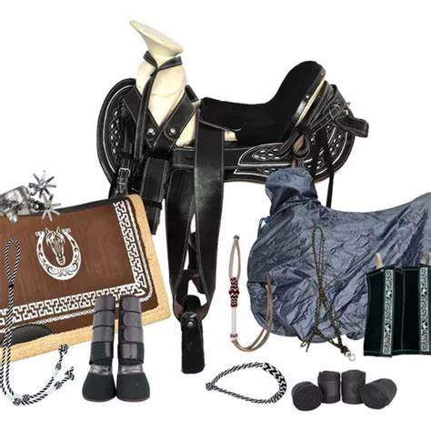

Elegir un buen equipamiento para tu caballo es primordial para su bienestar y para la seguridad de ambos. Seas profesional o no, si montas a tu caballo y soléis ir de ruta juntos, debes contar con una serie de accesorios que permitan una monta cómoda y segura.

Vuelta atrás